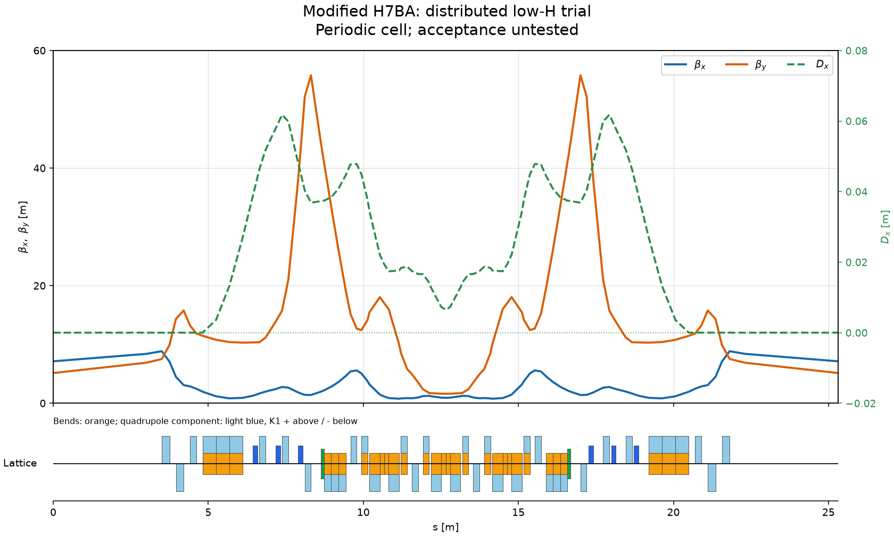
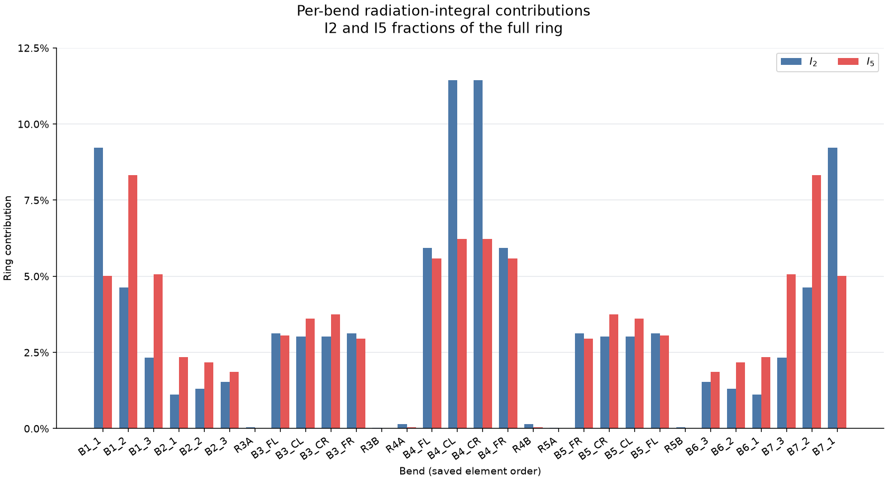
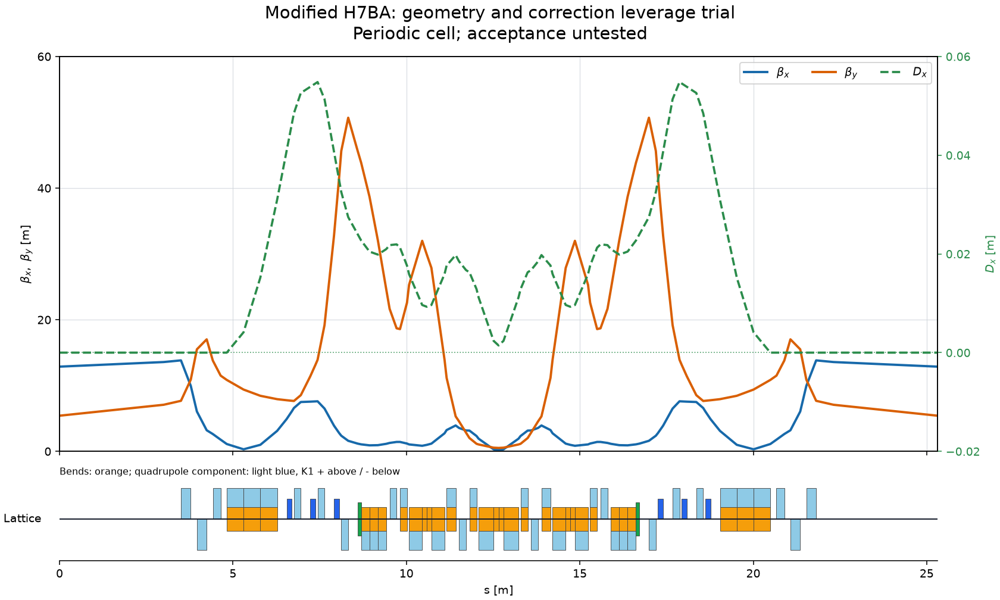
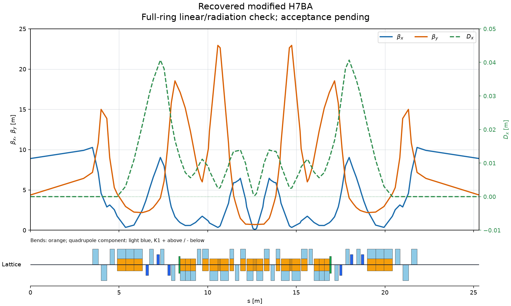
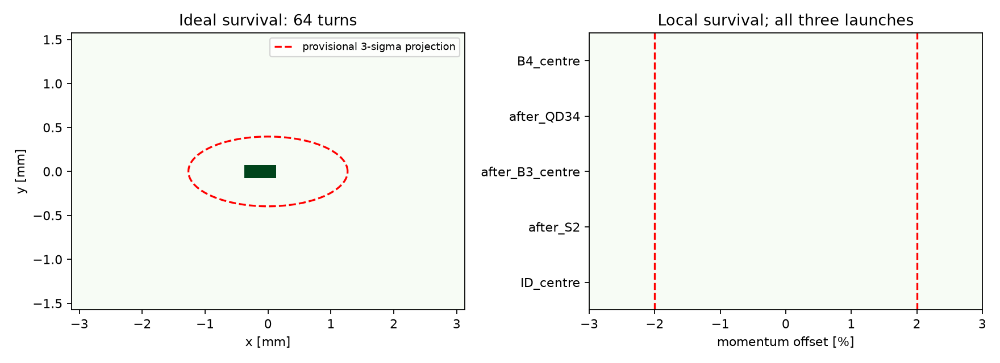
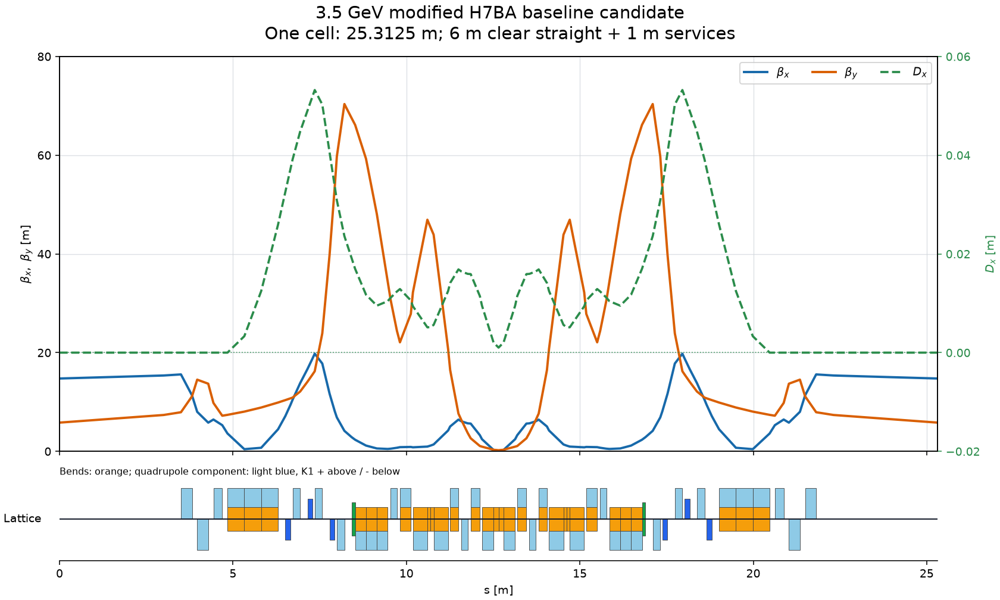
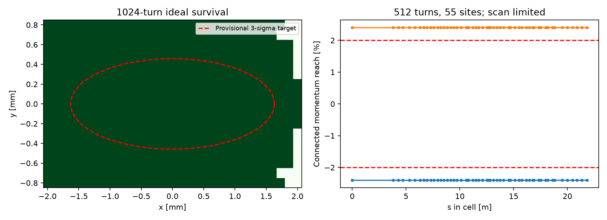

Start a new 3.5 GeV, 810 m, 32-cell modified-H7BA design. The first goal is a validated baseline near 20 pm·rad, accepting ≤30 pm, with chromaticities (+5,+5), useful connected transverse acceptance and local momentum acceptance larger than ±2%. Reserve a clear 6 m achromatic straight per cell and account for services separately within the circumference. Use outer longitudinal-gradient bends with embedded focusing in B1/B7, and B3–B5 modules with higher-field centres, defocusing combined-function flanks and neighboring reverse bends. Include independent defocusing quadrupoles between B3/B4 and B4/B5, at least three sextupole sites in each bump, and up to two octupole sites per cell. Parameterize internal lengths, bend angles, field profiles and gradients and do not freeze the first geometry.
One-chat modified-H7BA storage-ring design
3.5 GeV · 810 m · 32 cells · 7 October 2026
An ideal-ring design baseline from one scientist request. Brilliance constructed and tested a 3.5 GeV, 810 m, 32-cell modified-H7BA ring with 6 m clear insertion straights and separately reserved service space. Its saved candidate has natural emittance 26.157 pm·rad and corrected chromaticities (+5, +5).
Sampled acceptance: connected momentum survival reaches at least −2.4% to +2.4% at 55 sampled locations for 512 turns and at 10 locations for 1,024 turns through the explicit ring. These are scan-limited lower bounds, not measured loss boundaries or proof of continuous ring-wide acceptance. The declared transverse test domain passes its sampled checks; its injected-beam emittances (20 nm horizontally and 4 nm vertically) are provisional assumptions.
Scope: an ideal hard-edge baseline with finite-turn acceptance tests, not an operationally qualified machine.
Evidence and limitations
Evidence and status: the completed numerical arrays and exact
ring/cell files were preserved before a reporting exception. The agent repaired
publication without repeating tracking. The saved report records its ideal checks
as passed and the request as satisfied. Its final application receipt nevertheless
has candidate_handoff=no_candidate: this archive binds the reported
candidate lattice-bab068c377be0fcc directly to hashed saved numerical files,
not to an automatic working-lattice promotion or independent new validation.
Model limitations: RF, radiation during tracking, magnet/alignment errors, insertion devices and chamber apertures are excluded. Natural emittance is derived from radiation integrals. The printed zero energy loss and undefined damping times in RF/radiation-off outputs are not physical equilibrium predictions. No operational machine qualification is claimed.
The original conversation below includes intermediate rejected candidates, numerical decisions and the reporting repair. This is one recorded case study, not a demonstrated success rate or a guarantee for arbitrary requests.
The saved conversation, tables and original plots are shown below using the application renderer. Technical logs remain expandable. Source/lattice files are named but not bundled; there is no live server or executable research code here. Times are Asia/Shanghai (UTC+8). Jump to final assessment · Snapshot provenance.
I’ll build a parameterized cell with explicit straight and service allocations, then use JuTrack to match the optics and radiation properties. I’ll assess chromatic correction and connected acceptance before treating any candidate as a validated baseline.
Evidence status: reported result
The calculation finished and its output was saved. Scientific interpretation has not yet been published.
Program output
Initializing JuTrack.jl...
PROBE {"length_m": 25.3125, "angle_rad": 0.19634954084936207, "elements": 92, "half_transport": [[0.45940545523453324, 53.12390135654003, -0.46610418812255827, -24.28326517130823, 0.016531691818087446, 0.018777684386474414], [3.33466210191267, 50.700105996396736, -3.507275322308695, 9.031014434644456, 0.03651687666440086, 0.03072384234638372], [5.526727735167944, 84.65150594646991, -0.957592376193622, -37.96146182332804, 0.04147076578554204, -2.5974927040615936e-06], [53.73691301572209, 665.1176868848015, -32.94610948107502, -74.24413725981975, -0.024804272757342954, -0.014756899282381365]], "elapsed_s": 2.7988343238830566}
- Process completion is not scientific validation.
Technical details (1)
The durable calculation `accelerator.run_long_research_program` is running as job `job-7de43b965b02b855a207`. The model turn has ended instead of polling it. Progress and the final tables/plots will appear in this chat automatically; you may send new messages or explicitly stop the calculation.
3 recorded file(s), not bundled in this snapshot
↓ initial_geometry.json↓ stdout.txt↓ stderr.txtCalculation finished
The calculation finished and its output was saved. Scientific interpretation has not yet been published.
Limitations
- Process completion is not scientific validation.
Evidence status: reported result
The calculation finished and its output was saved. Scientific interpretation has not yet been published.
Program output
Initializing JuTrack.jl...
PROBE {"length_m": 25.3125, "angle_rad": 0.19634954084936207, "elements": 92, "half_transport": [[0.45940545523453324, 53.12390135654003, -0.46610418812255827, -24.28326517130823, 0.016531691818087446, 0.018777684386474414], [3.33466210191267, 50.700105996396736, -3.507275322308695, 9.031014434644456, 0.03651687666440086, 0.03072384234638372], [5.526727735167944, 84.65150594646991, -0.957592376193622, -37.96146182332804, 0.04147076578554204, -2.5974927040615936e-06], [53.73691301572209, 665.1176868848015, -32.94610948107502, -74.24413725981975, -0.024804272757342954, -0.014756899282381365]], "elapsed_s": 2.7989628314971924}
MATCH {"start": 0, "fit_norm": 0.1958287778200224, "passed": true, "emittance_pm": 2720.7433825322205, "path": "C:\\Users\\Jinyu\\Desktop\\brilliance\\research_projects\\project-27a852b84dbd77\\workspace\\artifacts\\programs\\program-7c667f33aa9ae0f25777\\candidate_00.json"}
MATCH {"start": 1, "fit_norm": 0.18222448913238934, "passed": true, "emittance_pm": 4721.91284341481, "path": "C:\\Users\\Jinyu\\Desktop\\brilliance\\research_projects\\project-27a852b84dbd77\\workspace\\artifacts\\programs\\program-7c667f33aa9ae0f25777\\candidate_01.json"}
MATCH {"start": 2, "fit_norm": 0.21802948276279852, "passed": true, "emittance_pm": 1940.0489409978784, "path": "C:\\Users\\Jinyu\\Desktop\\brilliance\\research_projects\\project-27a852b84dbd77\\workspace\\artifacts\\programs\\program-7c667f33aa9ae0f25777\\candidate_02.json"}
MATCH {"start": 3, "fit_norm": 0.15861780468652242, "passed": true, "emittance_pm": 4713.169370331296, "path": "C:\\Users\\Jinyu\\Desktop\\brilliance\\research_projects\\project-27a852b84dbd77\\workspace\\artifacts\\programs\\program-7c667f33aa9ae0f25777\\candidate_03.json"}
DONE {"calls": 13069, "elapsed_s": 76.54299545288086}
- Process completion is not scientific validation.
4 recorded file(s), not bundled in this snapshot
↓ candidate_03.json↓ search_summary.json↓ stdout.txt↓ stderr.txtI’ll read and compare the saved matching results, then use the strongest candidate to choose the next step. I won’t repeat the completed search.
Technical details (1)
The durable calculation `accelerator.run_long_research_program` is running as job `job-30ca46059856d59daec4`. The model turn has ended instead of polling it. Progress and the final tables/plots will appear in this chat automatically; you may send new messages or explicitly stop the calculation.
Research result
Distributed bending optics search completed; saved best native radiation candidate.
Limitations
- Periodic-cell radiation only; chromatic correction and acceptance untested.
- H-weighted search surrogate is not the reported emittance; reported emittance is native ringpara.
Evidence status: reported result
Distributed bending optics search completed; saved best native radiation candidate.
| Dx m | beta max m | emittance pm | passed | start | surrogate norm |
|---|---|---|---|---|---|
| -1.734e-9 | 55.78643 | 105.12309 | 1 | 4 | 1.85187 |
| 1.237e-9 | 53.15617 | 143.21549 | 1 | 3 | 2.31895 |
| -2.447e-10 | 67.11721 | 204.67172 | 1 | 0 | 2.8132 |
| 2.289e-10 | 62.93142 | 264.14007 | 1 | 1 | 3.14748 |
| 4.184e-10 | 32.85745 | 420.25958 | 1 | 2 | 4.61249 |
- Periodic-cell radiation only; chromatic correction and acceptance untested.
- H-weighted search surrogate is not the reported emittance; reported emittance is native ringpara.

I’ll compare the saved emittance results and inspect the bend optics to see whether this search produced a useful starting point for chromatic correction.
The measured correction reaches (4.999995, 4.999958) from natural chromaticities (−72.29, −216.74). Halving the momentum step changes the result by less than 1.7×10⁻⁵. The peak sextupole strength is 713 m⁻³, with four independent correction-nullspace directions available.
The native radiation decomposition passes its sum check: B1/B7 contribute about 36.8% of I5, B3/B5 26.8%, and B4 23.6%. No single bend explains the remaining emittance gap. I’ll release quadrupole lengths, individual reverse-bend lengths, and core-centre fractions while improving horizontal sextupole leverage. This follows the joint emittance/chromatic-design approach discussed by Zhao, Jiao and Wang; acceptance will still require tracking.
Evidence status: reported result
Measured chromatic correction and native per-bend radiation for a 105 pm comparison candidate.
| corrected | natural | plane |
|---|---|---|
| 4.99999 | -72.2886 | x |
| 4.99996 | -216.74475 | y |
- Emittance exceeds 30 pm.
- Connected acceptance and integration convergence untested.

Technical details (1)
The durable calculation `accelerator.run_long_research_program` is running as job `job-b4e061c1b9dc8c52ec1c`. The model turn has ended instead of polling it. Progress and the final tables/plots will appear in this chat automatically; you may send new messages or explicitly stop the calculation.
Research result
Expanded geometry search completed; saved best native radiation candidate with sextupole leverage constraints.
Limitations
- Periodic-cell radiation only; chromatic correction and acceptance untested.
- H-weighted search surrogate is not the reported emittance; reported emittance is native ringpara.
Evidence status: reported result
Expanded geometry search completed; saved best native radiation candidate with sextupole leverage constraints.
| Dx m | beta max m | emittance pm | passed | start | surrogate norm |
|---|---|---|---|---|---|
| 4.950e-11 | 50.69563 | 33.17373 | 1 | 4 | 1.11467 |
| -1.189e-9 | 56.87529 | 43.70924 | 1 | 5 | 1.27068 |
| -3.397e-9 | 52.66507 | 45.03687 | 1 | 2 | 1.29112 |
| 1.692e-10 | 56.2749 | 45.39004 | 1 | 0 | 1.28181 |
| 3.090e-10 | 51.5082 | 47.30567 | 1 | 3 | 1.30835 |
| -8.410e-9 | 56.25729 | 79.15925 | 1 | 1 | 1.68834 |
- Periodic-cell radiation only; chromatic correction and acceptance untested.
- H-weighted search surrogate is not the reported emittance; reported emittance is native ringpara.

I’ll read the expanded-geometry results and compare them with the saved 105.1 pm candidate. The next step will depend on the remaining emittance gap and the correction optics.
Technical details (1)
The durable calculation `accelerator.run_long_research_program` is running as job `job-daa2ebfcdadc8eb2c565`. The model turn has ended instead of polling it. Progress and the final tables/plots will appear in this chat automatically; you may send new messages or explicitly stop the calculation.
An execution issue occurred; saved results were preserved. See technical details for the error and recovery status.
Technical details (1)
This execution stopped before the stage finished. I’m inspecting the saved program and results to diagnose it and repair what is safe (attempt 1). Existing results and checkpoints are preserved; the exception alone does not establish a physics failure. Issue: `juliacall.JuliaError: DomainError with -5330.799692153931:` Details: `workspace/runtime_failures/job-daa2ebfcdadc8eb2c565.json`
I’ll inspect the traceback and any saved candidates before changing the refinement. The earlier 33.17 pm result is preserved; this failure does not invalidate it.
The first refinement completed and saved a 17.38 pm·rad candidate before the second start failed inside JuTrack’s half-line Twiss calculation.
| Saved candidate | Result | Status |
|---|---|---|
| Natural emittance | 17.38 pm·rad | Below 30 pm |
| Straight Dx | −0.586 mm | Achromat condition not met |
| Sampled maximum beta | 22.7 m | Finite |
| Symmetry residual norm | 0.0113 | Matching incomplete |
This is promising, but it is not a baseline. The failed trial’s exact coordinates were not saved, so the traceback does not establish the domain error’s full cause. I’ll preserve the completed candidate and make a small, bounded achromat rematch. I’ll first check native transfer-map propagation against its successful Twiss result, then remeasure radiation and chromatic correction.
The bounded rematch succeeded. The explicit 810 m ring gives 17.28284 pm·rad, agreeing with the periodic-cell result, and straight dispersion is below 6×10⁻¹² m.
Chromatic correction is now the obstacle. With the exploratory bound \|K2\| ≤1,000 m⁻³, the best measured result is (−50.6, −93.0), well short of (+5,+5). That strength bound was my study assumption, not your requirement.
I’ll measure the strength actually needed for (+5,+5), then run a short full-ring acceptance screen. This will show whether stronger sextupoles are worth pursuing or whether the optics must trade some emittance for better correction.
Evidence status: reported result
Recovered saved low-emittance candidate by a bounded achromat rematch; measured correction and explicit ring radiation.
- Connected transverse and momentum acceptance remain untested.

Technical details (1)
The durable calculation `accelerator.run_long_research_program` is running as job `job-e077561a97c6dcbc71ad`. The model turn has ended instead of polling it. Progress and the final tables/plots will appear in this chat automatically; you may send new messages or explicitly stop the calculation.
Research result
Short explicit-ring connected acceptance screen completed; not long-term validation.
Limitations
- Short ideal tracking only; no RF, radiation tracking, errors or physical aperture model.
- Injection domain is provisional.
Evidence status: reported result
Short explicit-ring connected acceptance screen completed; not long-term validation.
Additional recorded quantities (2)
| quantity | value |
|---|---|
| elapsed_s | 3.17473 |
| turns | 64 |
- Short ideal tracking only; no RF, radiation tracking, errors or physical aperture model.
- Injection domain is provisional.

Saved artifact locations (1)
candidate_source: artifacts/programs/program-a08d5eeb3b924229ef7e/selected.json
I’ll read the saved survival masks and connected-acceptance results. These will determine whether to optimize the sextupole and octupole settings or return to the linear optics.
Technical details (1)
The durable calculation `accelerator.run_long_research_program` is running as job `job-c0440a465581ad065426`. The model turn has ended instead of polling it. Progress and the final tables/plots will appear in this chat automatically; you may send new messages or explicitly stop the calculation.
Research result
Sextupole-nullspace and octupole search completed; connected masks saved.
Limitations
- Ideal short-screen search and 128-turn follow-up; no machine acceptance certification.
Evidence status: reported result
Sextupole-nullspace and octupole search completed; connected masks saved.
Additional recorded quantities (2)
| quantity | value |
|---|---|
| best_merit | 145.14641 |
| calls | 1,250 |
- Ideal short-screen search and 128-turn follow-up; no machine acceptance certification.
I’ll compare the 128-turn result with the training screen, including each momentum limit, to decide whether the nonlinear settings improved this candidate enough to keep its optics.
Technical details (1)
The durable calculation `accelerator.run_long_research_program` is running as job `job-6f60787d031516aa59fd`. The model turn has ended instead of polling it. Progress and the final tables/plots will appear in this chat automatically; you may send new messages or explicitly stop the calculation.
Research result
Optics bank with sextupole pair-phase and correction-leverage objectives saved.
Limitations
- Phase cancellation is a hypothesis, not tracking acceptance.
Evidence status: reported result
Optics bank with sextupole pair-phase and correction-leverage objectives saved.
| Dx m | emittance pm | half pair phase pi | natural xi | passed | peak k2 | start | xi |
|---|---|---|---|---|---|---|---|
| -1.473e-15 | 26.18064 | 1.6523087571683581,0.5170287616256015,1.635913229889784,0.503766911943612 | -238.88917505487936,-584.3774666868029 | 1 | 1,308.13209 | 3 | 4.999986436970971,4.999627739010748 |
| -8.659e-15 | 27.25053 | 1.8557958414791942,0.5137247226947548,1.8401411540563473,0.5045929004518123 | -219.04857175414347,-1277.3425774373236 | 1 | 1,707.59987 | 2 | 4.999944012240576,4.997208941759368 |
| -6.929e-15 | 17.28253 | 1.8627591698776924,0.5101493367551869,1.8355773071126396,0.4745988003977238 | -191.4216200553653,-246.69694545096374 | 1 | 1,554.54364 | 0 | 5.000035765334587,4.9999430389746635 |
| -4.785e-16 | 33.37042 | 1.6531938969721378,0.19587016506405064,1.6279294189589184,0.16066994443478333 | -285.29871754869873,-241.65473178143768 | 1 | 1,725.88459 | 1 | 4.999993976895212,4.999997756272023 |
- Phase cancellation is a hypothesis, not tracking acceptance.
I’ll inspect the saved optics bank and compare emittance, phase advances, and corrected sextupole strengths before choosing candidates for tracking.
Trial 03 gives the best acceptance result so far:
| 64-turn ideal screen | 17.28 pm comparison | 26.18 pm trial 03 |
|---|---|---|
| Sampled connected transverse area | 0.086 mm² | 0.277 mm² |
| Worst local momentum interval | −0.50% to 0% | −1.25% to +0.75% |
Equal mirror-pair strengths extend trial 03’s positive momentum reach to +1.0%, with a small transverse-area loss. It still fails both acceptance targets.
I’ll use the 26.18 pm optics for the next rematch. I’ll gradually tighten the achromat constraints, allowing the phase advances to move before the final exact achromat check.
Evidence status: reported result
Saved optics bank compared by connected ideal full-ring tracking.
| connected area mm2 | emittance pm | label | missing transverse | momentum interval | peak k2 |
|---|---|---|---|---|---|
| 0.06375 | 27.25053 | phase02 | 0.92771 | 0,0 | 1,707.60322 |
| 0.06375 | 27.25053 | phase02_sym | 0.92771 | 0,0 | 1,707.60322 |
| 0.2775 | 26.18064 | phase03 | 0.68 | -0.0125,0.0075 | 1,308.13276 |
| 0.255 | 26.18064 | phase03_sym | 0.70667 | -0.0125,0.01 | 1,308.13276 |
| 0.08625 | 17.28284 | eps17_sym | 0.86301 | -0.005,0 | 1,555.20902 |
- 64-turn ideal screening is not long-term acceptance validation.
Technical details (1)
The durable calculation `accelerator.run_long_research_program` is running as job `job-304e40467f06c9b589ee`. The model turn has ended instead of polling it. Progress and the final tables/plots will appear in this chat automatically; you may send new messages or explicitly stop the calculation.
Research result
Optics bank with staged achromat matching and sextupole-pair phase objectives saved.
Limitations
- Phase cancellation is a hypothesis, not tracking acceptance.
Evidence status: reported result
Optics bank with staged achromat matching and sextupole-pair phase objectives saved.
| Dx m | emittance pm | half pair phase pi | natural xi | passed | peak k2 | start | xi |
|---|---|---|---|---|---|---|---|
| 3.434e-14 | 25.81128 | 1.5070660433511196,0.5054940338339271,1.494163068797384,0.4965023425348896 | -234.11652182510065,-414.882211872225 | 1 | 635.90394 | 3 | 4.999915388026466,4.999963565666121 |
| -3.563e-16 | 24.94516 | 1.5087507264673696,0.5050908646906236,1.4917727748086185,0.4960285404478416 | -199.55979061307968,-466.97335010357216 | 1 | 714.56501 | 1 | 4.999931733351559,4.999940240324463 |
| -1.130e-15 | 25.97833 | 1.5108046791033092,0.5111686690523981,1.4956591755246333,0.5021449862060612 | -223.6732547959974,-551.8524716986661 | 1 | 771.98195 | 0 | 4.999914170156217,4.999853283393918 |
| -3.132e-16 | 26.15723 | 1.5102613425790141,0.5131870149329385,1.4975856427946515,0.5040144740825223 | -243.08448719452255,-451.60140706848034 | 1 | 615.37439 | 2 | 4.999902407121226,4.999956140139261 |
- Phase cancellation is a hypothesis, not tracking acceptance.
I’ll compare the saved phase matches with the 26.18 pm candidate, then screen any new optics that stay within the emittance ceiling.
The symmetric version of trial 00 passes both 64-turn screening targets: every sampled point in the provisional transverse domain survives, and all five tested locations reach at least −2.5% to +2.5%. Both momentum limits are scan-boundary lower bounds.
I’ll retain it for longer tracking, denser momentum sampling, and an integration-convergence check. The rest of the bank is still running, so I haven’t selected the final candidate yet.
The bank screen is complete. I’m selecting symmetric trial 02 for validation: 26.16 pm·rad, all sampled transverse target points surviving, and momentum reach of at least ±2.5% at the five tested locations. It has the lowest peak sextupole strength, 615 m⁻³, among the candidates reaching both momentum scan edges.
I’ll now test more launch locations and turns, sample additional transverse phase-space directions, and repeat key checks with finer integration. The model remains ideal: RF, tracking radiation, alignment errors, and physical aperture restrictions are off.
Evidence status: reported result
Saved optics bank compared by connected ideal full-ring tracking.
| connected area mm2 | emittance pm | label | missing transverse | momentum interval | peak k2 |
|---|---|---|---|---|---|
| 1.9125 | 25.97833 | staged00 | 0.16867 | -0.025,0.02 | 771.98218 |
| 3.6 | 25.97833 | staged00_sym | -0 | -0.025,0.025 | 771.98218 |
| 1.1775 | 24.94516 | staged01 | 0.31325 | -0.0175,0.015 | 714.5652 |
| 3.6 | 24.94516 | staged01_sym | -0 | -0.025,0.0225 | 714.5652 |
| 0.9075 | 26.15723 | staged02 | 0.41379 | -0.0125,0.01 | 615.37457 |
| 3.6 | 26.15723 | staged02_sym | -0 | -0.025,0.025 | 615.37457 |
| 0.9075 | 25.81128 | staged03 | 0.41379 | -0.01,0.01 | 635.90412 |
| 3.525 | 25.81128 | staged03_sym | -0 | -0.025,0.0225 | 635.90412 |
- 64-turn ideal screening is not long-term acceptance validation.
Technical details (1)
The durable calculation `accelerator.run_long_research_program` is running as job `job-286bb9e4573a8fa210ea`. The model turn has ended instead of polling it. Progress and the final tables/plots will appear in this chat automatically; you may send new messages or explicitly stop the calculation.
An execution issue occurred; saved results were preserved. See technical details for the error and recovery status.
Technical details (1)
This execution stopped before the stage finished. I’m inspecting the saved program and results to diagnose it and repair what is safe (attempt 2). Existing results and checkpoints are preserved; the exception alone does not establish a physics failure. The generated research program used an invalid argument, variable or API call. This is a coding error, not a physics conclusion. Issue: `TypeError: Object of type bool is not JSON serializable` Details: `workspace/runtime_failures/job-286bb9e4573a8fa210ea.json`
I’ll inspect the traceback and saved validation outputs to identify where reporting failed and which physics results are recoverable, without repeating completed tracking.
The failure occurred while serializing the final report, after all tracking and integration checks had been saved. A NumPy Boolean in the checks is the likely cause.
The saved results support the ideal-lattice baseline:
| Check | Measured result |
|---|---|
| Natural emittance | 26.157 pm·rad, below 30 pm |
| Chromaticities | (5.0000000, 5.0000000) |
| Connected local momentum reach | At least ±2.4% at 55 locations for 512 turns; confirmed at 10 locations for 1,024 turns |
| Connected transverse area | 6.26 mm² on the sampled grid |
| Provisional transverse target | All sampled points inside the 1.630 × 0.458 mm half-axis ellipse survive; 240 additional phase-space launches also survive |
| Doubled integration resolution | Emittance changes −0.0029%; chromaticities change by less than 0.0045; acceptance checks still pass |
These are ideal, finite-turn results; RF, errors and hardware apertures remain untested. I’ll recover the report and acceptance figure from the saved files and verify the serialization repair without rerunning tracking.
The ideal full-ring baseline passes the declared checks at 26.157 pm·rad. This meets the ≤30 pm acceptance limit, though it remains above the 20 pm aspiration.
The reporting failure was a NumPy Boolean serialization error. I reproduced and repaired it, then recovered the report and figures from saved evidence. No tracking was repeated.
| Requirement | Validated result |
|---|---|
| Energy, circumference, cells | 3.5 GeV, 810 m, 32 |
| Clear achromatic straight | 6 m/cell; separately reserved services: 1 m/cell |
| Natural emittance | 26.157 pm·rad, with positive damping partitions |
| Chromaticities | (+5.000000, +5.000000) |
| Local momentum acceptance | Sampled connected reach ≥±2.4% at 55 locations for 512 turns; confirmed at 10 locations for 1,024 turns |
| Transverse acceptance | 6.26 mm² sampled connected area after 1,024 turns |
| Provisional transverse target | All 173 grid points pass; all 240 additional phase-space launches survive |
| Integration refinement | Emittance changes −0.0029%; chromaticity changes <0.0045; acceptance checks pass |
The requested magnet arrangement is retained: focusing outer longitudinal-gradient bends, higher-field core centres with defocusing flanks and neighboring reverse bends, independent QD34/QD45 controls, three sextupoles per bump, and two reserved octupole sites currently set to zero. Peak field is 1.162 T, peak gradient 79.39 T/m, and peak \(|K_2|\) 615.37 m⁻³. Geometry remains parameterized.
The transverse target assumes matched injected geometric emittances of 20/4 nm·rad, giving 3σ half-axes of 1.630/0.458 mm. Momentum reaches are scan-limited lower bounds. These finite-turn, sampled results establish an ideal lattice baseline; RF, radiation during tracking, magnet errors, insertion devices and hardware apertures remain untested. Service space is reserved rather than an engineered installation.
Saved deliverables: full-ring lattice, validation report, cell optics, and [parameterized builder](C:/Users/Jinyu/Desktop/brilliance/research_projects/project-27a852b84dbd77/workspace/programs/h7ba_staged_phase.py).
Attached: 2 figure(s) and 0 reproducible file(s).
Evidence status: reported result
Recovered completed JuTrack validation: 26.157 pm ideal baseline passes declared finite-turn requirements; no tracking repeated.
Additional recorded quantities (3)
| quantity | value |
|---|---|
| phase_space_count | 240 |
| phase_space_lost | 0 |
| relative_emittance_integration_change | -2.899e-5 |
- Ideal hard-edge lattice: RF, radiation tracking, errors, insertion devices and hardware apertures off.
- Acceptance is finite-turn, discrete-sample survival; scan-edge reaches are lower bounds, not measured loss boundaries.
- Transverse reference uses provisional matched injected geometric emittances 20 nm horizontal and 4 nm vertical.
- Service space is reserved, not a fitted RF or engineering installation.
- Natural-emittance equilibrium is computed from radiation integrals; saved zero U0 and undefined damping times are not physical predictions with radiation tracking off.

